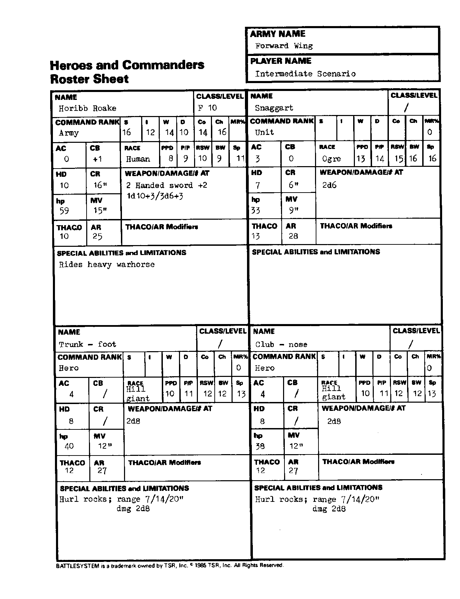

前锋翼 Forward Wing：英雄与指挥官
能力值顺序：力量／智力／感知／敏捷／体质／魅力。五项豁免依次为麻痹·毒素·死亡魔法／石化·变形／法杖·法棒·魔杖／吐息／法术。移动与指挥半径以桌面英寸计；“—”表示原卡空白或不适用。武器两种伤害分别针对 S/M 与 L 目标；特殊多次攻击另行注明。
霍里布·罗克 Horibb Roake
| 项目 | 数值 |
|---|---|
| 职业／等级 | 战士 10 |
| 指挥职级 | 军队 |
| 六项能力值 | 16/12/14/10/14/16 |
| 种族 | 人类 |
| 魔法抗性 MR | 0% |
| 护甲等级 AC | 0 |
| 指挥加值 CB | 1 |
| 五项豁免 | 8/9/10/9/11 |
| 生命骰 HD | 10 |
| 指挥半径 CR | 16 |
| 生命值 hp | 59 |
| 移动率 MV | 15 |
| THAC0 | 10 |
| 攻击等级 AR | 25 |
| 武器／伤害／攻击次数 | 双手剑 +2；1d10+3／3d6+3 |
| 特殊能力、限制与准备法术 | 骑重型战马。 |
斯纳加特 Snaggart
| 项目 | 数值 |
|---|---|
| 职业／等级 | — |
| 指挥职级 | 部队 |
| 六项能力值 | — |
| 种族 | 食人魔 |
| 魔法抗性 MR | 0% |
| 护甲等级 AC | 3 |
| 指挥加值 CB | 0 |
| 五项豁免 | 13/14/15/16/16 |
| 生命骰 HD | 7 |
| 指挥半径 CR | 6 |
| 生命值 hp | 33 |
| 移动率 MV | 9 |
| THAC0 | 13 |
| 攻击等级 AR | 28 |
| 武器／伤害／攻击次数 | 2d6 |
| 特殊能力、限制与准备法术 | — |
树干脚 Trunk-foot
| 项目 | 数值 |
|---|---|
| 职业／等级 | — |
| 指挥职级 | 英雄 |
| 六项能力值 | — |
| 种族 | 山丘巨人 |
| 魔法抗性 MR | 0% |
| 护甲等级 AC | 4 |
| 指挥加值 CB | — |
| 五项豁免 | 10/11/12/12/13 |
| 生命骰 HD | 8 |
| 指挥半径 CR | — |
| 生命值 hp | 40 |
| 移动率 MV | 12 |
| THAC0 | 12 |
| 攻击等级 AR | 27 |
| 武器／伤害／攻击次数 | 2d8 |
| 特殊能力、限制与准备法术 | 投石，射程 7/14/20 英寸，伤害 2d8。 |
棒鼻 Club-nose
| 项目 | 数值 |
|---|---|
| 职业／等级 | — |
| 指挥职级 | 英雄 |
| 六项能力值 | — |
| 种族 | 山丘巨人 |
| 魔法抗性 MR | 0% |
| 护甲等级 AC | 4 |
| 指挥加值 CB | — |
| 五项豁免 | 10/11/12/12/13 |
| 生命骰 HD | 8 |
| 指挥半径 CR | — |
| 生命值 hp | 38 |
| 移动率 MV | 12 |
| THAC0 | 12 |
| 攻击等级 AR | 27 |
| 武器／伤害／攻击次数 | 2d8 |
| 特殊能力、限制与准备法术 | 投石，射程 7/14/20 英寸，伤害 2d8。 |
兵力卡原图
